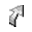
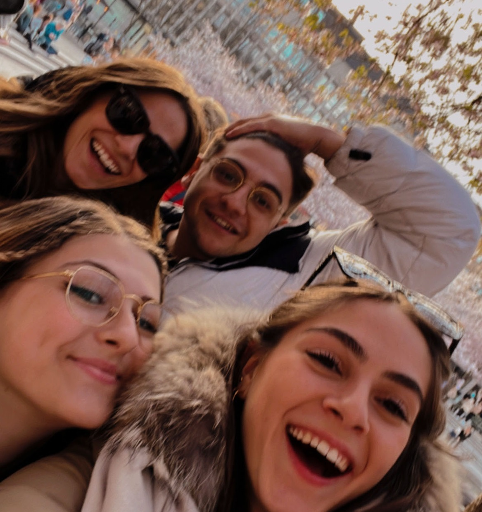
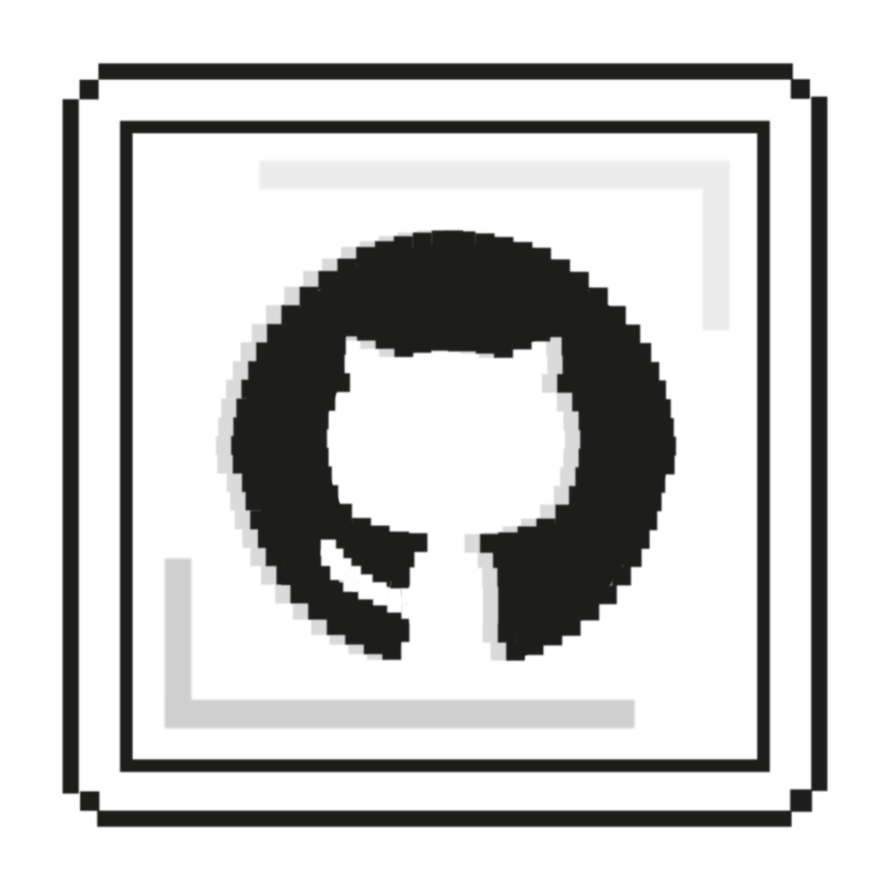

Menu
 About
About
 Projects
Projects
 News
News
Recursion
 CV
CV
Loading last update ...
current-time

Vairo Di Pasquale
Graduated in Computer Science and student at the Master's degree in Artificial Intelligence at the University of Bologna.
 SITE UNDER CONSTRUCTION
SITE UNDER CONSTRUCTION
 Reach out!
Reach out!
January 16, 2022 (6 months)
—  Completed Exchange Program at the Mid Sweden University
Completed Exchange Program at the Mid Sweden University
October 15, 2020
— 🎓 Started the Master Degree in Artificial Intelligence at the University of Bologna
October 14, 2020
— 📜 Graduated with the Bachelor Degree in Computer Science at the University of Bologna
